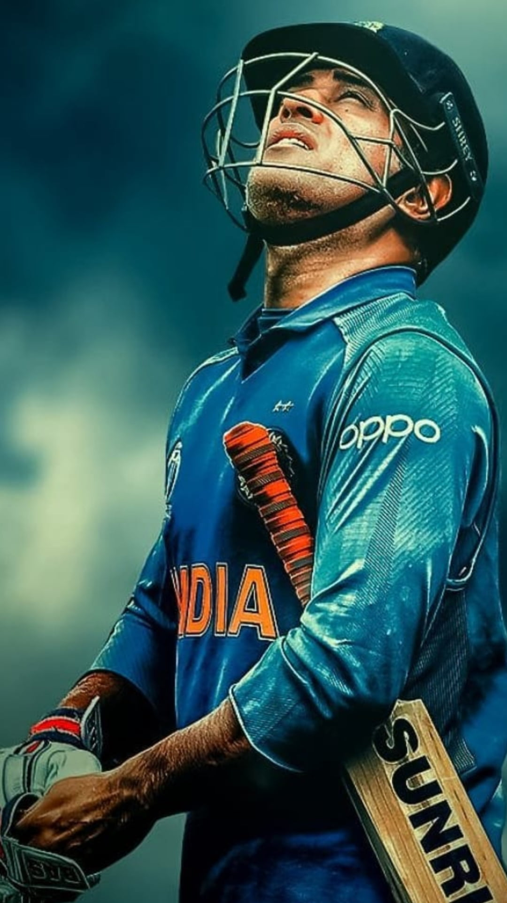
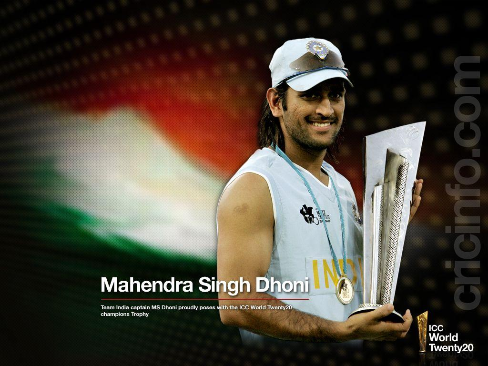
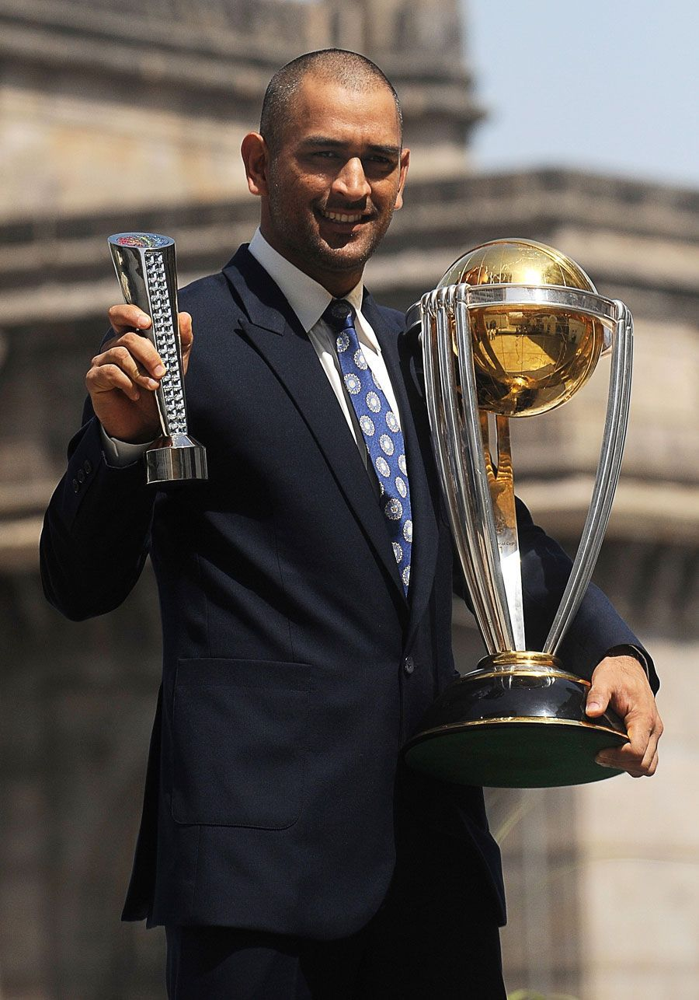
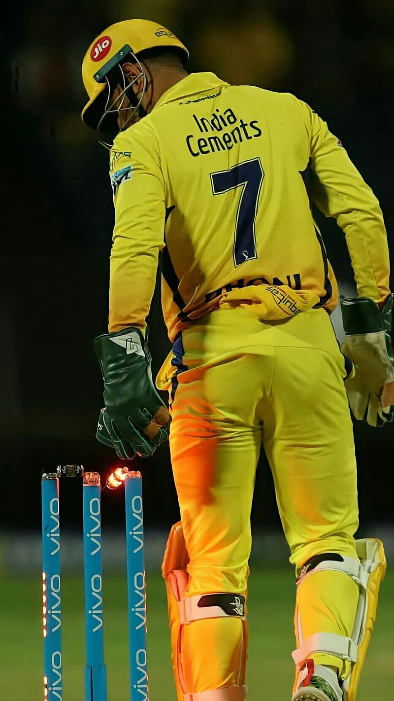

In September 2007, Dhoni was appointed as the captain of the Indian T20 team for the inaugural T20 World Cup. The team had a mix of experienced players like Sachin Tendulkar, Sourav Ganguly, and Rahul Dravid, along with young talents like Yuvraj Singh and Robin Uthappa.
His calm and composed demeanor, even in high-pressure situations, was one of the key factors that helped the team succeed.
Dhoni's tactical genius was also on full display throughout the tournament. He made bold decisions, such as bringing in Joginder Sharma to bowl the last over in the semi-final against Australia, which paid off and led India to the final.
In the final against Pakistan, Dhoni played a captain's knock, scoring crucial runs and guiding his team to a competitive total. With his bowlers executing his game plan to perfection, India emerged victorious and Dhoni lifted the trophy in triumph.
Overall, Dhoni's leadership during the T20 World Cup in 2007 was exemplary and played a pivotal role in India's historic victory.
The year was 2011, and the entire country of India was gripped with World Cup fever. The nation had high hopes of winning the tournament for the second time, and at the heart of this dream was a man who had already proved his worth as a captain - MS Dhoni.
Dhoni led his team with an unflappable confidence and conviction, making bold tactical decisions that always seemed to pay off. His ability to inspire and motivate his players was a sight to behold.
In the final against Sri Lanka, the pressure was immense, but Dhoni kept his cool and played a captain's knock, scoring an unbeaten 91 runs to guide India to victory. His calmness under pressure and his unwavering belief in his team were instrumental in their success.
Dhoni's captaincy during the World Cup 2011 was a defining moment in Indian cricket history, and his leadership skills will be remembered for generations to come.


In the history of the Indian Premier League, no player has had a greater impact on a team than MS Dhoni has had on the Chennai Super Kings.
His tactical brilliance and calm demeanor on the field have helped the team overcome numerous challenges and win crucial matches. Dhoni has always had an eye for talent and has backed his players to the hilt, providing them with the freedom to express themselves on the field.
As a batsman, Dhoni's ability to control the game's pace and finish matches with his trademark helicopter shot has been a game-changer for CSK. His contributions as a wicket-keeper and strategist have also been invaluable.
Dhoni's influence on CSK cannot be measured merely in numbers. He has been the heart and soul of the team and will continue to be remembered as one of the greatest cricketers to have played for the franchise.
"If you don’t really have a dream, you can’t really push yourself, you don’t really know what the target is."
- MS Dhoni